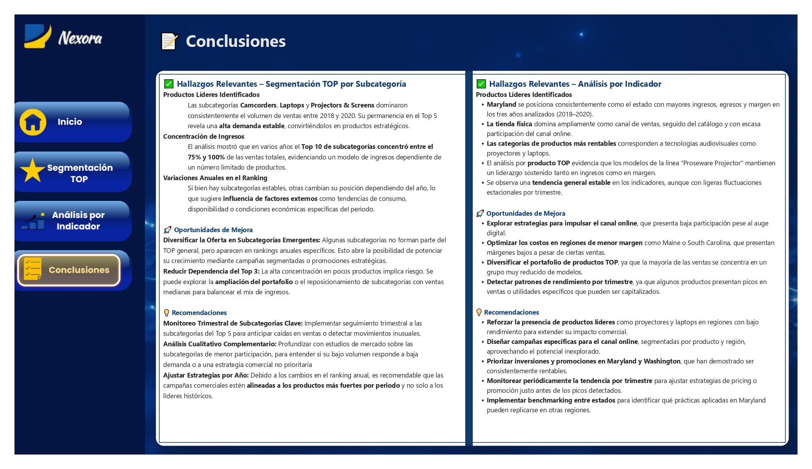
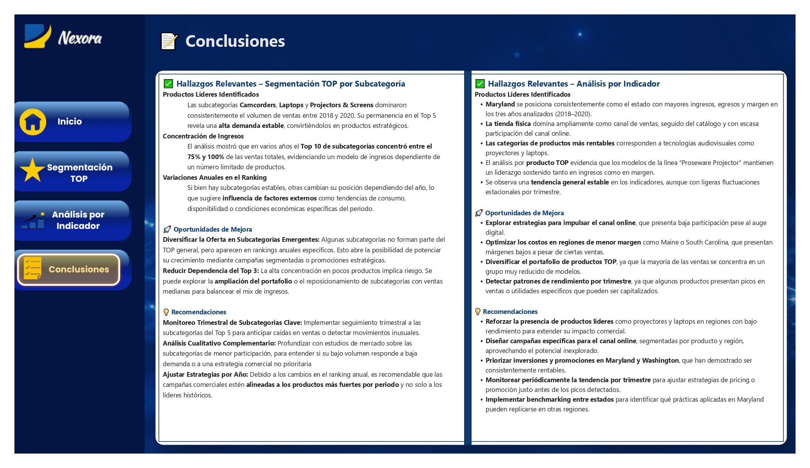

Este dashboard permite identificar rápidamente las subcategorías con mayor impacto en las métricas de ventas, egresos y margen. Utiliza segmentaciones dinámicas por filtros clave como canal, estado, año y TOP. Fue diseñado para la toma de decisiones ejecutivas y cuenta con visualizaciones claras, segmentadas por indicador y por valores destacados.

Visualizaciones Destacadas

 

Conclusiones Estratégicas
- 🎯 El 80 % de las ventas proviene del Top 10 de subcategorías, mostrando alta concentración.
- 📉 Se identificaron regiones con márgenes bajos (Maine, South Carolina), ideales para ajustes.
- 💡 Existen oportunidades en subcategorías emergentes que pueden ser impulsadas estratégicamente.
- 📊 Las segmentaciones por moneda revelaron ineficiencias en la conversión dólar-colón.
- 🌐 El canal online está infrautilizado, lo que representa un espacio para crecimiento digital.
- 🧠 Se sugiere implementar benchmarking regional para replicar prácticas exitosas.
Tecnologías Utilizadas
Herramientas: Power BI · DAX · Excel · Segmentaciones dinámicas · Bookmarking
Mi aporte: Desarrollo completo del dashboard, limpieza de datos, diseño de KPIs e interpretación de hallazgos.
¿Te gustaría que realice este tipo de análisis para tu empresa?
Contáctame